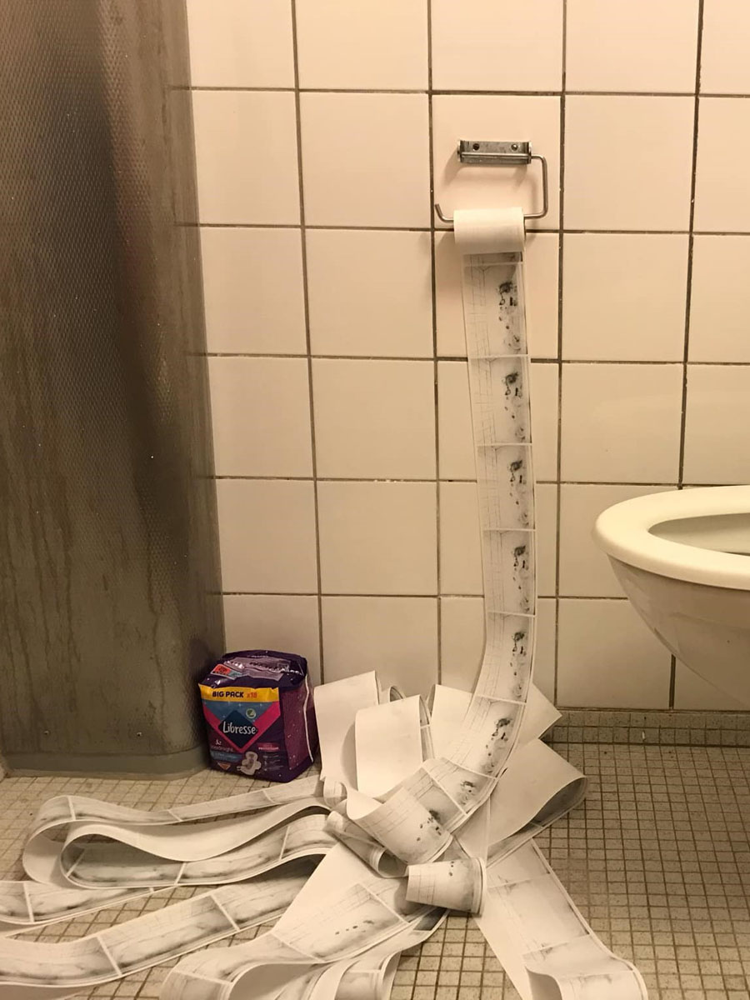

MAJ
FÆRGEMANN
ONGOING

SHAMPOOOPERA 2024-
Ongoing shampoo opera project in collaboration with Nikita Schwaner. Until now we have made 4 pseudo-movies and a 5th will be arriving in the end of 2025.
Ongoing shampoo opera project in collaboration with Nikita Schwaner. Until now we have made 4 pseudo-movies and a 5th will be arriving in the end of 2025.

SKOLEKUNST & KUNSTSKOLER (ARTSCHOOL & SCHOOLART) 2020-
Investigative encyclopedic book project comming out in the start of 2026. ->READ MORE<-
Investigative encyclopedic book project comming out in the start of 2026. ->READ MORE<-

SPRADIO 2025-
Host on spRadio, a jutland based, independent, live, internet-art-radio station. ->GO TO WEBSITE AND LISTEN<-
Host on spRadio, a jutland based, independent, live, internet-art-radio station. ->GO TO WEBSITE AND LISTEN<-